Journal
Notes and updates from Maorach Beag
Latest Entry
A list of notes and updates related to our farm and restoration activities.
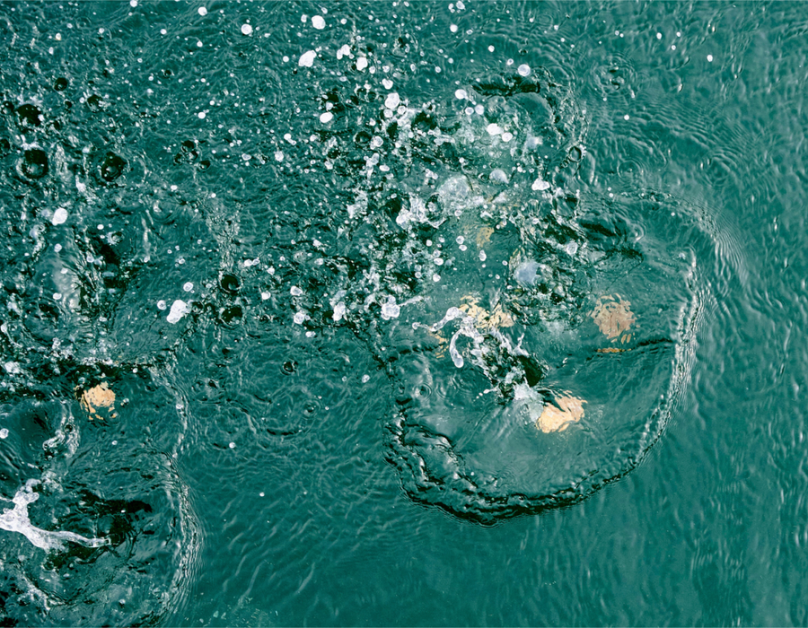
Jan 2025 — Oysters and the Firth of Forth - Part 5 (Progress Report)
The WWF oyster restoration project in the Firth of Forth #restorationforth has shown promising results, with recent surveys revealing an impressive 85% survival rate among the reintroduced native oysters.
Nov 2024 — DEEP - 100k Oysters Announcement
The Glenmorangie DEEP Native Oyster Restoration project have now deployed 100k Native Oysters (Ostrea edulis) to the Dornoch Firth. We are proud to be the main supply chain partner for the oysters.
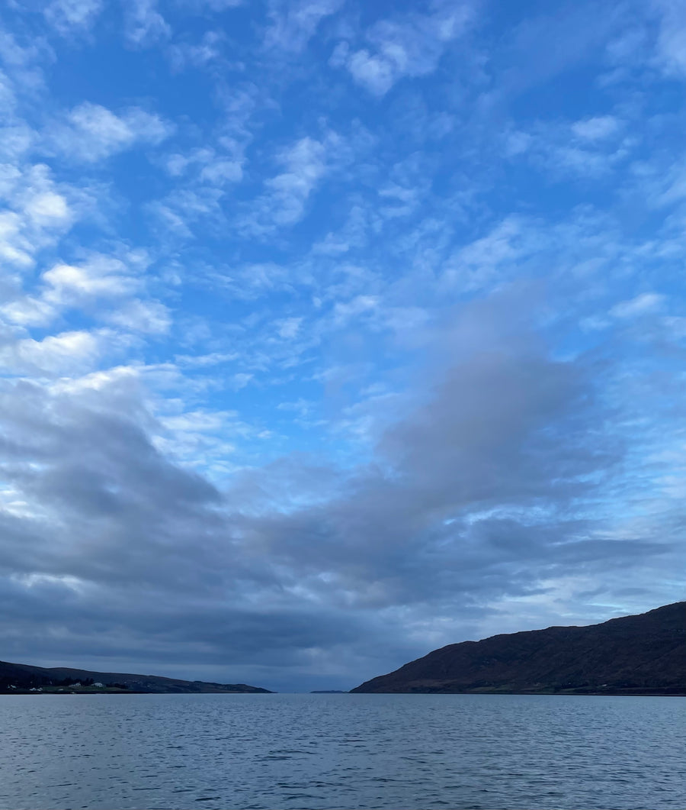
Nov 2023 — Cuairt Suaus (A Round Up) - 2023
It is that that time of year again, so time for a wee round up of what we have been up to over the last 12 months. A key year for us and our Native European Flat Oyster,(Ostrea edulis), Restoration efforts.
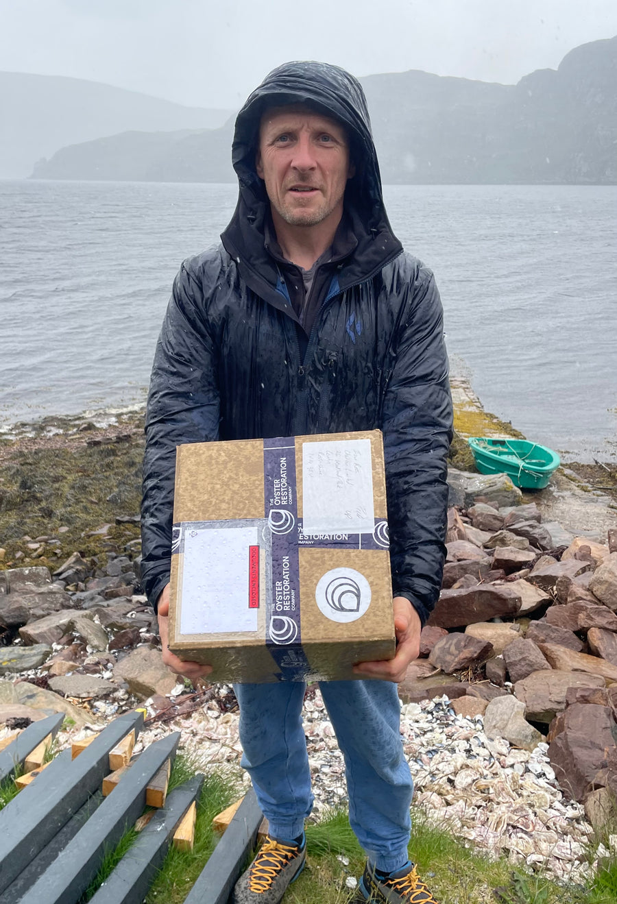
Sept 2024 — Rain And Wind X Repeat
Dear reader, what can we say, it has been a while since we posted an update. As it happens, this is summer has been dreadful, cold, wet and windy, and apparently it has been the worst summer in Scotland in over twenty years but time and tide waits for no man. So let’s get on with a brief review of what has been happening.
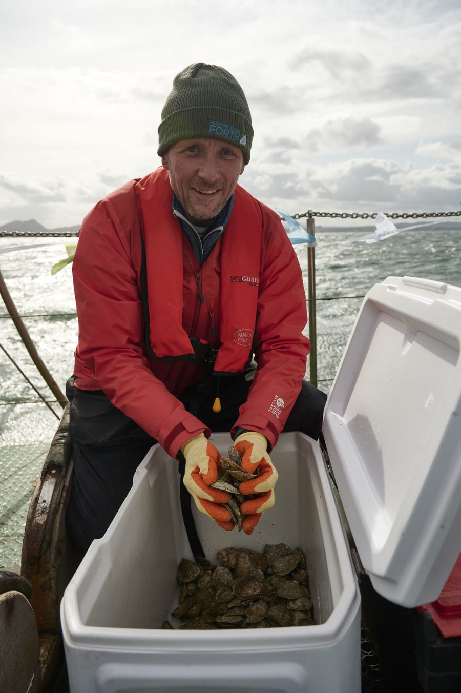
Sept 2023 — Oysters and the Firth of Forth - Part 4 (Making it Happen)
And so this week, and after a huge effort by so many people, the restoration of Native oysters (Ostrea edulis) to the Firth of Forth was started. The first Native oysters back in the firth in almost 100 years. A proud moment for all involved.
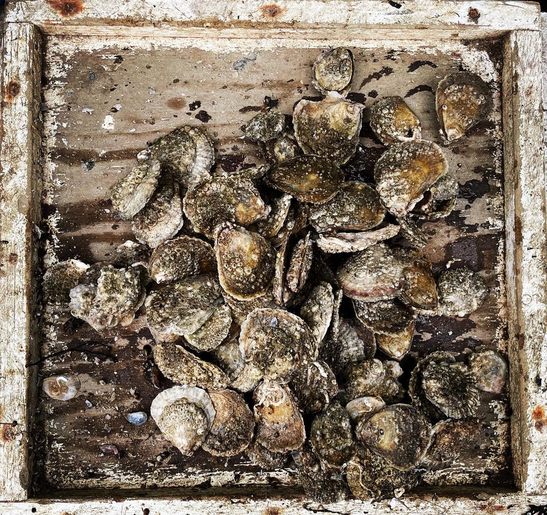
May 2023 — Oysters and the Firth of Forth - Part 3 (Extinction and Rebirth)
The history of oysters in Firth of Forth since the time of the Industrial Revolution. A story of extinction. Learn about Restoration Forth project's efforts to restore oyster, Ostrea edulis, populations.
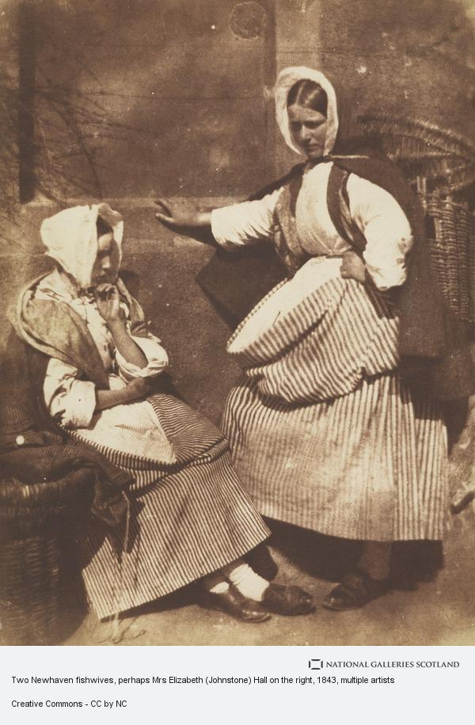
Mar 2023 — Oysters and the Firth of Forth - Part 2 (The Fisher Folk)
The story of the 'Fisher Folk', the people who fished for oysters and other species in the Firth of Forth.
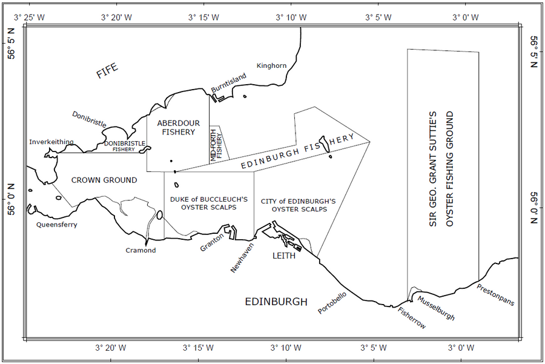
Feb 2023 — Oysters and the Firth of Forth - Part 1 (Pre Industrial Revolution)
The first in a series of small articles that cover the fascinating and colourful history of Scotland’s most famous oyster bed in the Firth of Forth. This is an introduction and considers the pre industrial revolution period.

Nov 2022 — Word of the day - Ostracise!
Are you aware of the link between oysters and the word ostracise? It is one of those little curiosities of life that pop up occasionally.
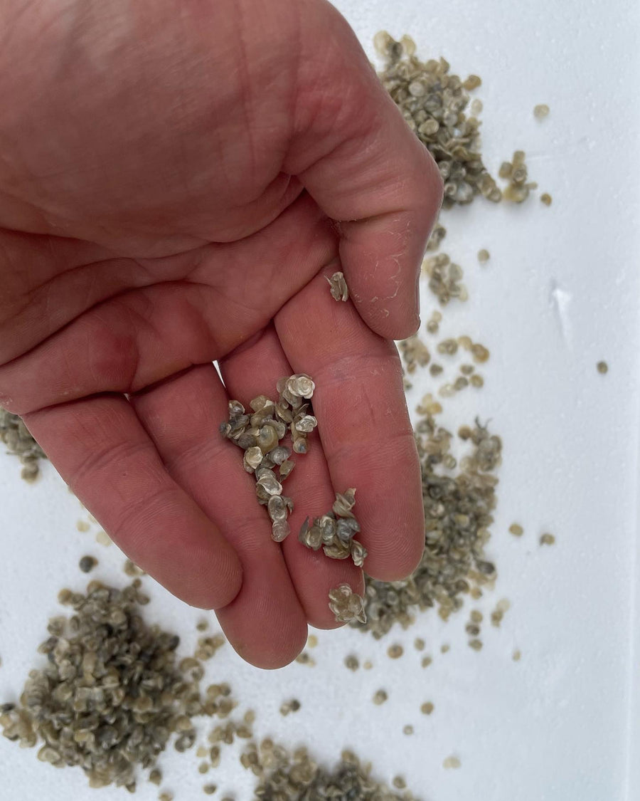
June 2022 - DEEP - Native Oyster Restoration - Phase 2
Phase 2 of the Glenmorangie DEEP Native Oyster Restoration project is now underway. We have recently taken the first batch of seed oysters onto the farm for on growing in support of this phase. Also our first use of ground breaking eDNA technology (Roslin Institute) to aid in Bonamia disease screening.
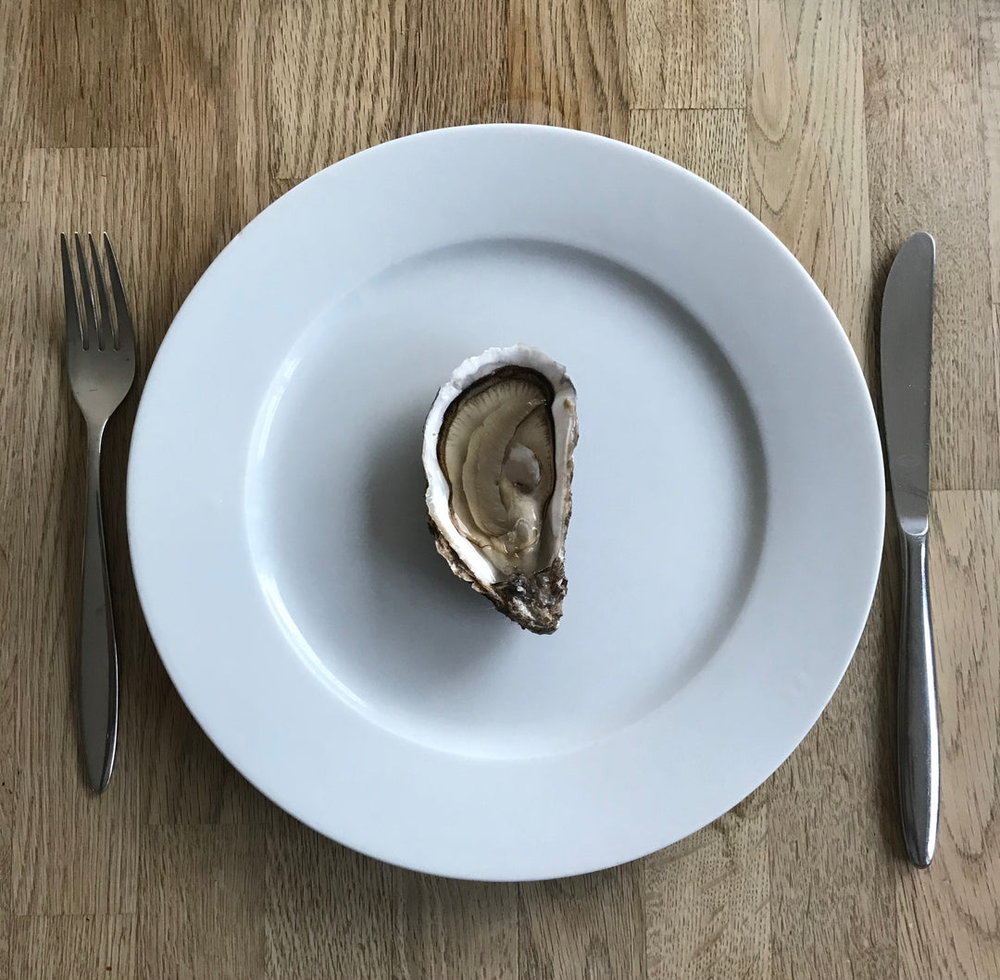
Oct 2021 — Can you eat oysters all year round and when are they at their best?
Can you eat oysters all year round and when are they at their best? An article to help try and navigate these two key oyster related questions. We shall use the discussion to generate some rough 'rules of thumb' to help you on your own oyster quest!
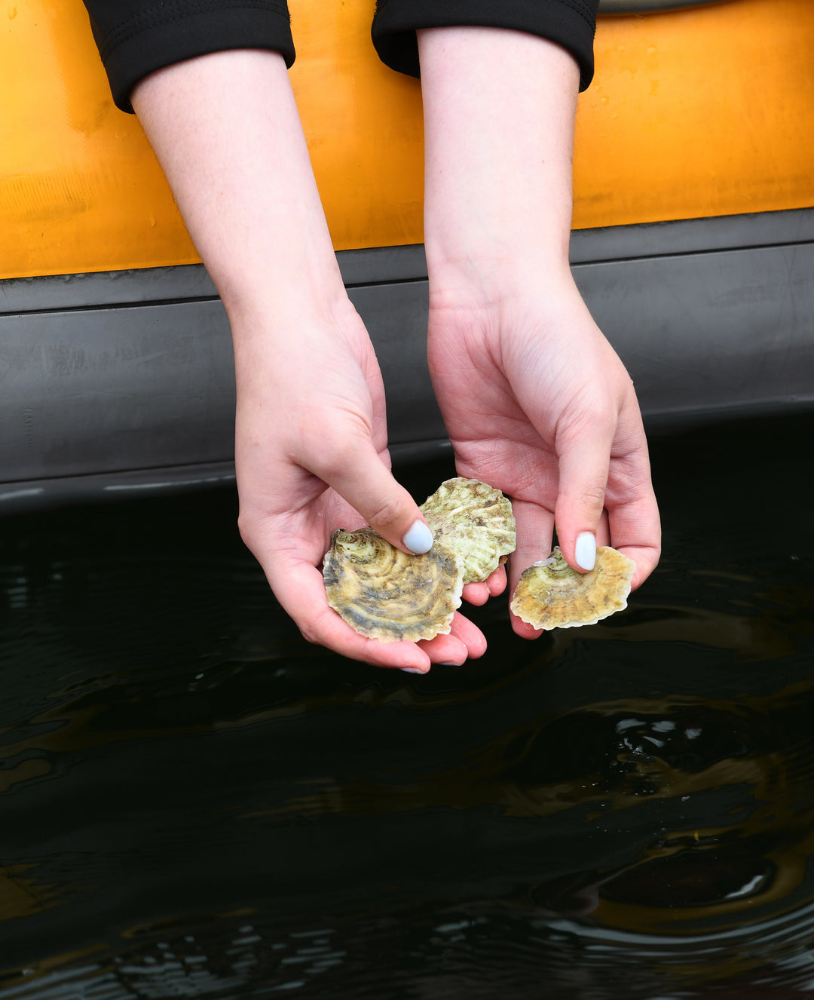
Aug 2021 - The Importance of Oyster Restoration – Chapter 4 – A Milestone Achieved
Glenmorangie Distillery and a team of scientists from Heriot-Watt University have reached a significant milestone in the Dornoch Environmental Enhancement Project (DEEP), focused on restoring a sustainable native oyster reef in the Dornoch Firth. August 2021 marks the completion of 20,000 native European oysters being returned to the Dornoch Firth, where they became extinct more than 100 years ago as a result of overfishing. This phase’s success will pave the way for the restoration of the reef, after years of research, planning and monitoring.
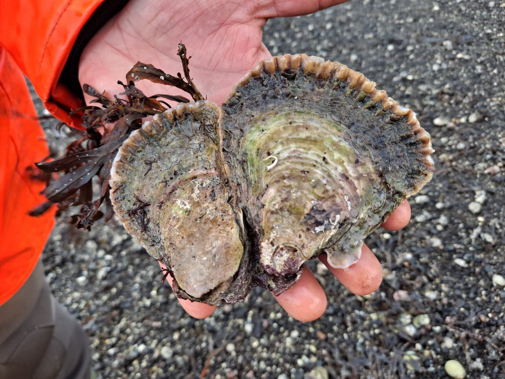
June 2021 — The Importance of Oyster Restoration – Chapter 3 – Oyster Reef Restoration – First Steps
What is an Oyster Reef? What is Oyster Reef Restoration? How can Oyster Reefs be restored? A brief review and an update on what happened to our 6K Native oysters.
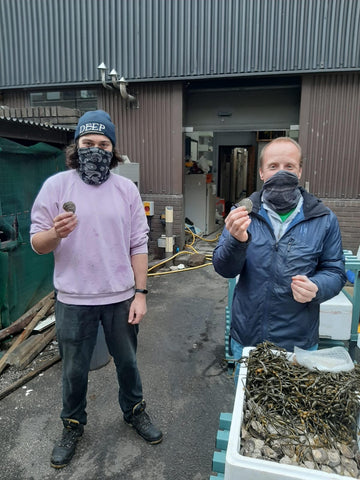
May 2021 - The Importance of Oyster Restoration – Chapter 2 – Biosecurity
Oyster Restoration requires Biosecurity. What is Biosecurity? Biosecurity is the use of measures to reduce the chance of negative effects upon ecosystems from biological organisms. This is important as over the years shellfish movements have been a major vector for the introduction of Invasive Non Native Species and various diseases.

Apr 2021 — The Importance of Oyster Restoration – Chapter 1 – Awake
The Importance of Oyster Restoration. Oysters are fantastic marine creatures, an individual animal can filter up to five litres of water per hour. Oysters are ‘Ecosystem Engineers’, and play a vital role in the protection of fragile marine ecosystems. We need to help them survive and prosper, it is in our own interest.
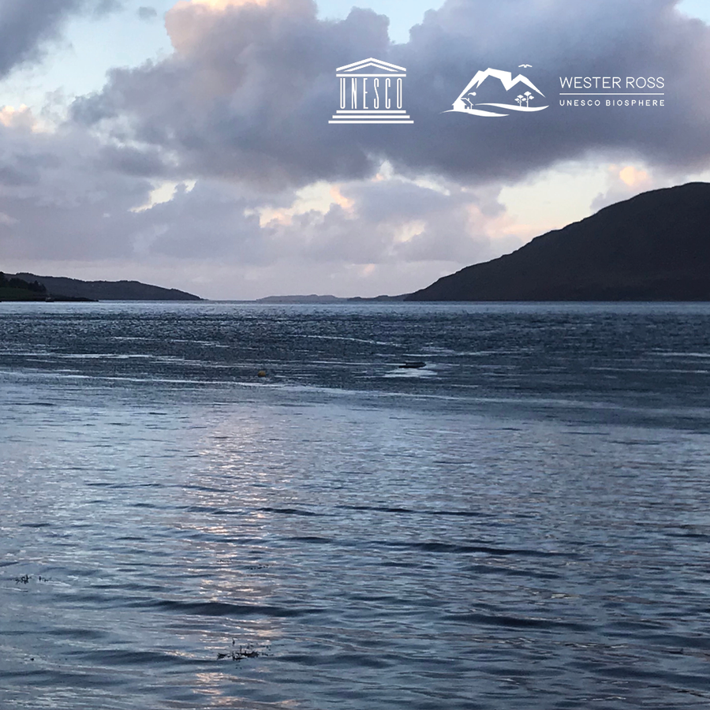
March 2021 - The Wester Ross UNESCO Biosphere - Announcement
We have some exciting news to share! The Native Oyster & Shellfish Company is now an official registered supporter of the Wester Ross UNESCO Biosphere.
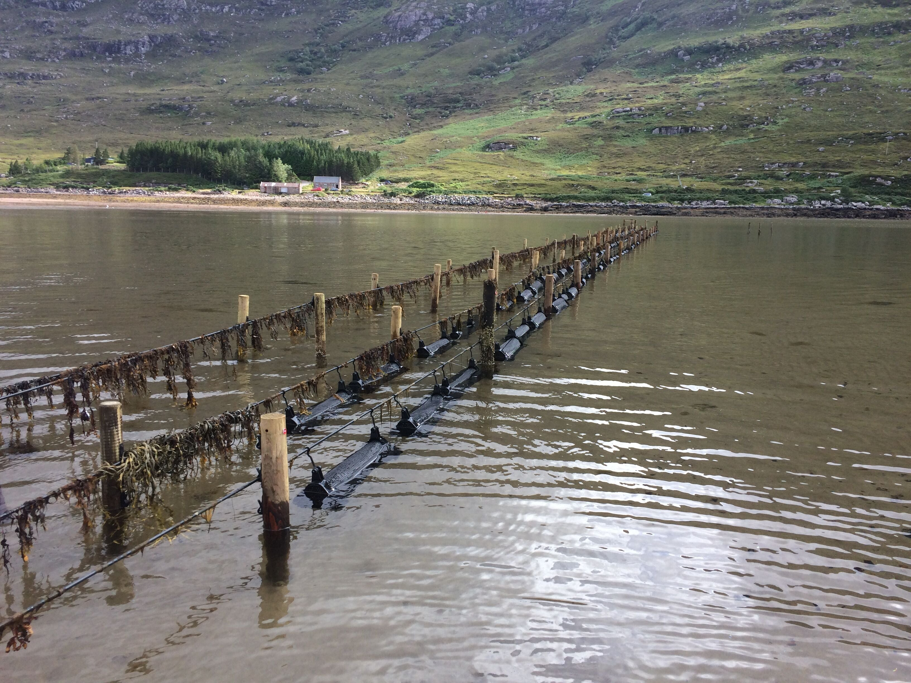
Feb 2021 - Is Oyster Farming a Good Thing?
We would argue that Oyster Farming, if done thoughtfully, is a good thing. We are growing a natural and chemical free product, that relies upon and helps restore the environment. The result of this is a wonderfully tasty and nutritious food full of the best Mother Nature has to offer.
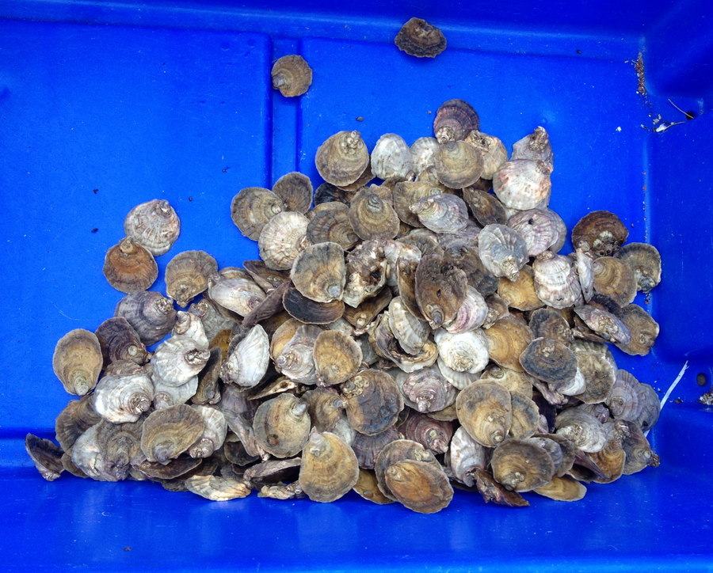
Dec 2020 - The Native Oyster - Ostrea edulis
A Native Oyster? The European Flat Oyster (Ostrea edulis) is the indigenous oyster of Europe, and in these parts it is often called the Native or Flat oyster. The history of this species is one of decline but we aim to help save this beautiful little animal.